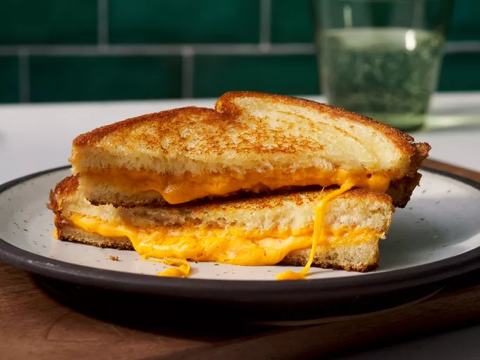
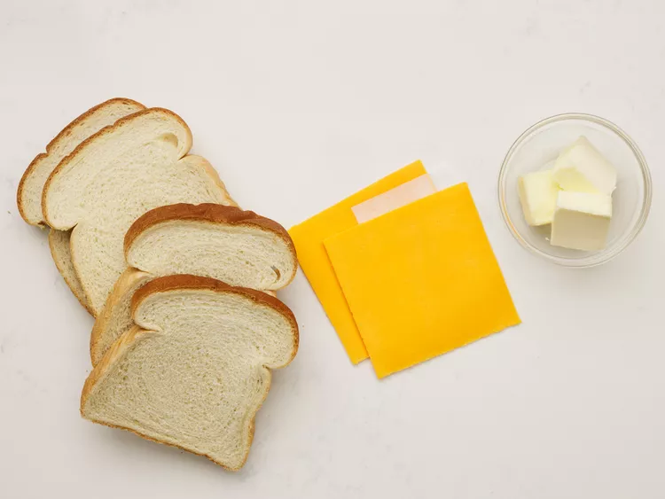
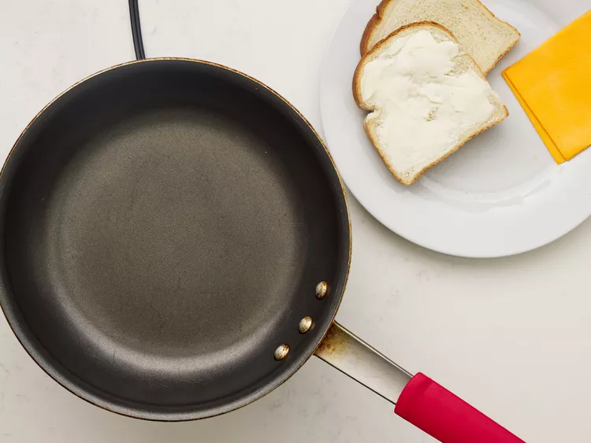
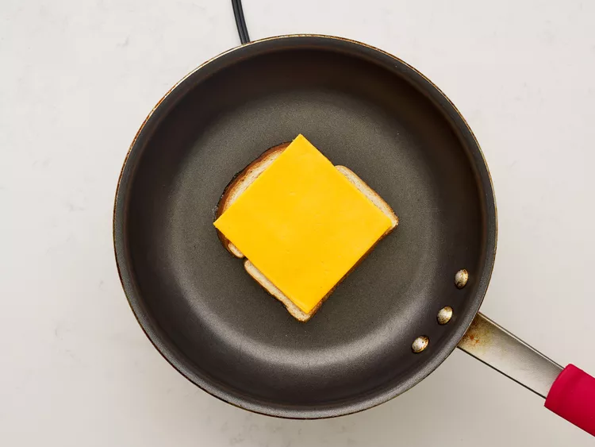
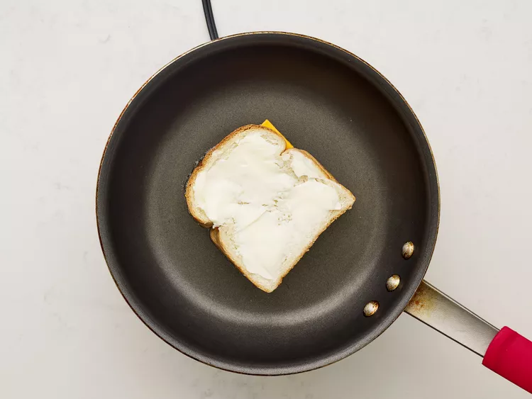
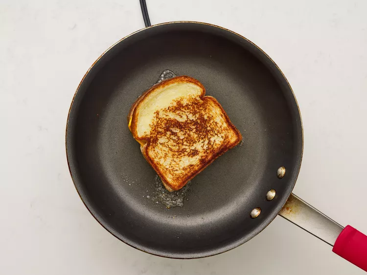

Go Home
Grilled Cheese Sandwich

Description
Learn how to make a grilled cheese sandwich in a nonstick pan with buttered bread and American Cheddar for a classic hot sandwich.
Ingredients
- 4 slices white bread
- 3 tablespoons butter, divided
- 2 slices Cheddar cheese
Steps
- Gather all ingredients

- Preheat a nonstick skillet over medium heat. Generously butter one side each bread slice.

- Place 1 slice bread, butter-side down, in the hot skillet; top with 1 slice cheese.

- Place 1 slice bread, butter-side up, on top cheese.

- Cook until lightly browned on one side; flip and continue cooking until cheese is melted.

- Repeat with remaining bread and cheese slices. Serve and enjoy!